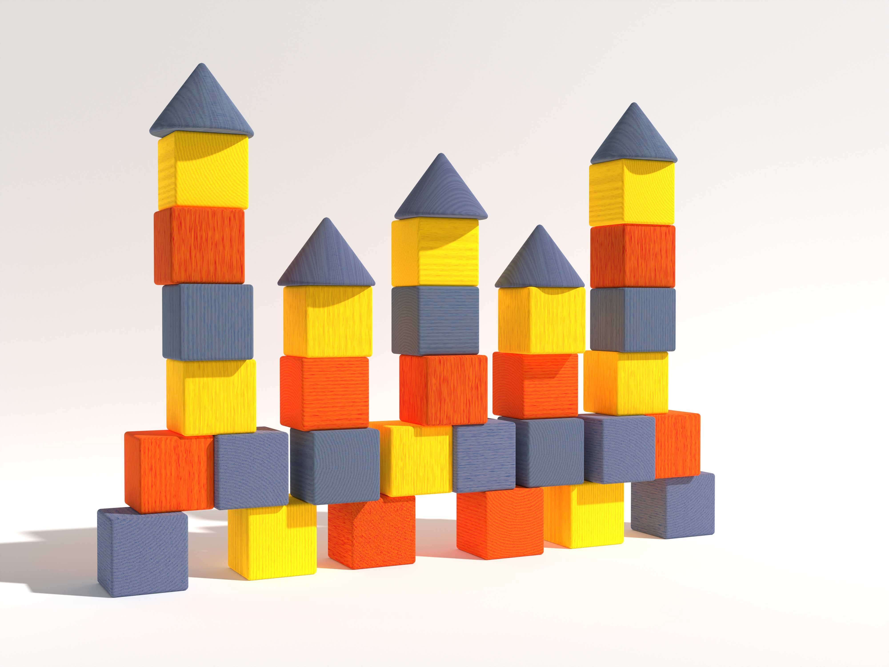
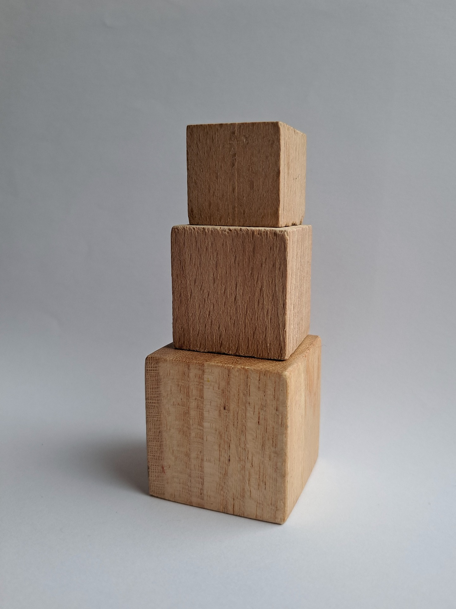

Prototype
skip to
Conceptual Response
My project is inspired by childhood play, specifically using wooden building blocks. These toys represent an early experience of creativity, where users can build and imagine freely using a small set of simple materials. With just a few blocks, people can create different structures like towers or objects, which creates a sense of open-ended and limitless creativity. This idea forms the foundation of my project.

To recreate this in a digital context, I developed a website that
allows users to build compositions using simple block-like shapes. I
then extended this idea by translating these visual builds into
sound using Tone.js. This adds another layer to the interaction,
where users are not only building visually, but also unintentionally
creating sound patterns through their placement.
The novelty of this project comes from combining spatial interaction
with sound. Instead of using common inputs like typing or clicking
to generate audio, the system uses the position, colour, and
arrangement of blocks to influence the sound output. This turns a
simple building interaction into a playful way of creating music.
This idea was influenced by projects explored in Assignment 1, such as Patatap and Incredibox, which map simple inputs to sound. However, my project focuses more on building and arranging objects in space, making the interaction feel more like constructing rather than triggering sounds directly.
The design is guided by the interaction design principles of mapping and feedback.
1. Mapping
Mapping is used to connect visual properties, such as colour and vertical position, to different sounds and pitch.
2. Feedback
Feedback is provided through both sound and visual responses, allowing users to immediately see and hear the result of their actions.
Since this is a prototype, I focused on keeping the system simple and easy to understand. The interface is visually driven, so users can explore and learn through interaction without needing instructions. This reflects the idea of childhood play, where users experiment freely and discover outcomes through doing.
Technical Approach
For this project, I used HTML, CSS, and JavaScript to build the core functionality of the website, with Tone.js integrated to translate visual interactions into sound. This allowed me to explore how user input could simultaneously influence both visual and audio outputs. To manage the complexity of the system, I approached development in stages, starting with the foundational structure of the grid and interaction logic, before layering in more advanced features such as sound mapping, looping, and user controls.
The system consists of four core interactions:
1.Drag & Drop System
Enables shapes to be placed within a structured grid while ensuring accurate positioning and preventing overlap.
2.Sound System
Translates visual placement into sound through colour-based mapping and pitch variation. actions.
3.Feedback System
Provides real-time visual and audio responses, particularly through the looping sequence.
4.Control Panel
Allows users to manage playback and adjust tempo, supporting experimentation and control.
This structured approach allowed each system to be developed independently before being integrated into a cohesive interactive experience.
Drag & Drop System
This interaction was one of the most complex parts of the project, as it required multiple systems to work together seamlessly. To manage this, I broke the process down into three key stages:
Grid & Placement
Shape Clone System
Interaction Refinement
Grid & Placement
I began by implementing a basic drag-and-drop structure using a reference from W3Schools, which provided the foundation for recognising draggable elements and valid drop zones.
The next step was structuring the square grid. I wanted each
square to be uniquely identifiable so it could be referenced later
for the feedback system and to manage occupied states. Rather than
assigning individual IDs, I used data attributes (data-row and
data-col) to store each square’s coordinates. This allowed
JavaScript to easily track and interact with each cell based on
its position.
This system became essential for handling placement logic. When a
shape is dropped, the program calculates its position relative to
the grid and determines which cells it should occupy. Using these
coordinates, the system checks for boundaries and prevents
overlaps by marking occupied cells accordingly.
Snapping the shapes accurately to the grid was one of the more
challenging aspects. I had to account for the size of each shape
and where the user was grabbing it from, ensuring that placement
felt natural rather than jumping unpredictably. Once placed, CSS
was used to visually align the shapes within the grid.
To improve flexibility, I implemented a system that updates
occupied cells whenever a shape is moved. This allows users to
reposition shapes freely, including dragging them back into the
container, making the interaction feel more fluid and responsive.
Shape Clone System
Since the interaction required multiple different clones of the same shapes, similar to a set of wooden blocks, I implemented cloning through JavaScript rather than duplicating elements in HTML. This allowed for greater flexibility and dynamic generation.
I wanted each interaction to feel unique, so no two compositions
would produce the same outcome. Inspired by the open-ended nature
of wooden blocks, the system encourages experimentation and
replayability.
To achieve this, each shape is cloned dynamically and assigned
randomised properties, including colour, position, and initial
rotation. This ensures that every session begins with a slightly
different layout, contributing to a more playful and engaging
experience.
Interaction Refinement
One improvement I introduced was allowing users to return shapes back to the container after placing them on the grid. This gave users more flexibility to adjust or undo their compositions, rather than being locked into their initial placement. Although this was a small addition, it helped improve the overall usability and made the interaction feel more forgiving and user-friendly.


Rotation
Another improvement was the introduction of shape rotation, which
gives users more control over how they arrange compositions within
the grid. This process involved a significant amount of trial and
error.
Initially, I attempted to rotate the shapes using CSS transforms.
While this visually rotated the element, it caused issues with
maintaining consistent sizing and alignment. In particular, the
SVGs would sometimes distort or scale incorrectly, making the
interaction feel unreliable.
After multiple iterations, I used AI to help identify the issue,
which was related to how the SVG viewBox and dimensions were being
handled. Rather than continuing with an increasingly complex
solution, I decided to take a more stable and controlled approach.
I resolved this by creating alternative SVG states for each
rotation and swapping between them. This allowed me to maintain
consistent proportions and avoid distortion, while still achieving
the intended rotation effect. It also required recalculating each
shape’s width and height in relation to the grid, as well as
updating how it occupies cells after rotation.
Overall, this decision prioritised reliability and consistency,
resulting in a smoother and more intuitive user experience.
Sound System
This interaction focuses on translating visual placement into sound,
allowing users to create simple musical compositions through
interaction with the grid. Using JavaScript and Tone.js, sound is
triggered based on both the colour and position of each shape placed
on the grid.
Each colour is mapped to a different type of sound, giving every
shape a distinct audio identity. This helps users recognise patterns
and differentiate between elements within their composition. In
addition to colour, pitch is determined by the vertical position of
the shape within the grid, where higher placements produce higher
notes and lower placements generate deeper tones. This creates a
more structured and musical system.
To further reinforce interaction, sound is triggered immediately
when a shape is placed onto the grid, providing instant feedback and
strengthening the connection between user action and system
response.
When the loop is activated, the system iterates through each column
of the grid, checking for occupied cells and triggering the
corresponding sounds in sequence. This creates a continuous playback
of the user’s composition, transforming static placement into a
dynamic audio experience.
Overall, this system encourages experimentation and exploration,
while maintaining a clear and intuitive relationship between visual
input and audio output.
Feedback System
The feedback system was designed to provide real-time visual and audio responses to user actions, reinforcing the interaction and improving usability. This follows the interaction design principle of feedback , where the system continuously responds to user input to make the interaction more understandable.
This is most evident in the looping system, where visual feedback is synchronised with audio playback. As the loop progresses, each column of the grid is highlighted to indicate the current position within the sequence. This helps users understand the timing and rhythm of their composition, making the interaction more intuitive and easier to follow.
Immediate feedback is also provided when shapes are placed, through both sound and visual updates. This allows users to instantly see and hear the result of their actions, strengthening the connection between input and outcome.
Control Panel
The control panel allows users to manage playback and interact with
the system more flexibly. This includes starting and stopping the
loop, as well as adjusting the tempo through a BPM slider.
The BPM control directly affects the speed of the loop, allowing
users to experiment with different rhythms and pacing. This adds
another layer of interactivity, enabling users to refine their
compositions and explore variations of the same arrangement.
Peer User Testing
Reflection
Based on this project, I am proud of what I have achieved within the three-week timeframe. I was able to develop a semi-functional website that successfully demonstrates the core interaction. While there is still room for further development, achieving the fundamental system was a significant milestone. In particular, I was able to apply the interaction design principles of mapping and feedback, ensuring that visual placement directly influences sound output, and that users receive immediate audio and visual responses to their actions.
 Another strength of my process was my ability to adapt and find
alternative solutions when faced with challenges. For example, I
encountered difficulties when implementing the rotation feature, which
initially led to technical issues with SVG scaling. Instead of becoming
overly focused on a single solution, I was able to pivot and explore a
different approach. This allowed me to continue progressing with the
project while still achieving a functional outcome. This experience
highlighted the importance of flexibility in problem-solving, particularly
when working with complex interactive systems.
Another strength of my process was my ability to adapt and find
alternative solutions when faced with challenges. For example, I
encountered difficulties when implementing the rotation feature, which
initially led to technical issues with SVG scaling. Instead of becoming
overly focused on a single solution, I was able to pivot and explore a
different approach. This allowed me to continue progressing with the
project while still achieving a functional outcome. This experience
highlighted the importance of flexibility in problem-solving, particularly
when working with complex interactive systems.
One area I could improve on is the range of sounds. While the sound system effectively demonstrates the relationship between visual placement and audio output, it is still limited in variety. Expanding the range of sounds and refining the mapping system could enhance the depth of interaction and encourage more experimentation.
Overall, this project has helped me develop a stronger understanding of how interaction design, technical implementation, and user experience are interconnected. Moving forward, I would focus on improving usability, expanding system complexity, and refining the overall experience to create a more polished and engaging interactive tool.
Worth
The worth of this project lies in its ability to reconnect users
with the playful and imaginative mindset often associated with
childhood. Many people grow up using simple toys such as building
blocks to explore creativity without rules or expectations. This
project aims to bring back that sense of freedom and curiosity
through an interactive digital experience.
Using the style and colours to make the website feel bright,
playful, and light-hearted. Through colourful blocks, simple
interactions, and toy-like sounds, the tool creates an environment
that encourages users to experiment and have fun. The experience
focuses less on technical skill and more on the joy of discovery.
In doing so, the project highlights how interactive digital tools
can recreate moments of play and imagination, allowing users to take
a small break from everyday pressures while engaging in a simple and
creative activity.

Framing
This project will be developed using HTML, CSS, and JavaScript, with the audio component supported by Tone.js. Tone.js enables the tool to generate playful, toy-like sounds that respond dynamically to user interactions.

Users will drag and place digital blocks onto the interface to build structures. Each block represents a sound element, such as a bell tone, drum hit, or melodic note, while the block’s position influences qualities like pitch or tone. In this way, the spatial arrangement of blocks shapes the resulting sound composition.
Sound playback may occur through a looping sequence or a play
function after the user completes their structure, with the final
method determined through experimentation. This system allows
users to explore how visual construction can translate into sound.
The interaction demonstrates key design principles such as
mapping, where block properties correspond to musical elements,
and feedback, where visual and audio responses immediately reflect
the user’s actions.

Incredibox is an interactive music tool that allows users to
create compositions by dragging sound icons onto animated
characters. Each icon represents a musical element, such as beats,
melodies, or vocal effects, which combine to form layered sound
loops. As more elements are added, the composition becomes richer,
creating a structured yet playful music-making experience.
The simplicity of the interface strongly influenced the direction
of my project. Incredibox demonstrates how minimal visual elements
can be used to produce engaging and expressive sound outcomes.
This idea of translating simple visual objects into sound relates
closely to my project, where blocks act as sound triggers. It
highlights how intuitive interactions can encourage users to
experiment without requiring prior musical knowledge.
Another key aspect of Incredibox is its balance between structure
and freedom. While each icon has a predefined sound, users are
free to combine them in different ways to create unique
compositions. This guided exploration ensures that the output
remains cohesive while still allowing for creativity. This
approach informs my project’s design, as I aim to provide users
with simple building elements that can be arranged freely, while
still producing playful and harmonious sound results.
Incredibox
Seaquence

Seaquence is an experimental music tool where users create small
sea creatures that generate sound. Each creature produces a unique
audio loop, and as more creatures are added, a layered musical
environment begins to form. The interaction is both visual and
auditory, as users design the appearance of each creature while
simultaneously shaping the overall soundscape.
The playful and imaginative nature of Seaquence closely relates to
my project, particularly in how visual creation directly
influences sound. This connection between designing an object and
hearing its corresponding audio aligns with my concept of using
blocks as sound elements, where building visually becomes a form
of composing music. By showing how simple visual elements can
generate evolving soundscapes, Seaquence demonstrates the
potential of interactive tools to encourage exploration and
creativity.
However, compared to tools like Patatap and Incredibox, Seaquence
uses a more complex interaction system. Its layered mechanics and
evolving creatures add depth but can make the experience feel less
immediate and intuitive. This highlights the importance of
simplicity in my own project, where I aim to keep interactions
clear and accessible, enabling users to quickly engage in playful
experimentation without needing to navigate complicated systems.
Interactive Experiments
Information Design
Through this experiment, I found that arranging the controls in a
horizontal row created a more structured and symmetrical layout.
This made it easier for users to navigate the interface, adjust
settings, and test different sound variations without confusion. The
clear alignment of elements helped communicate their function more
effectively, improving the overall usability of the tool.
Translating this into my project, I will consider how layout can
guide user interaction and make the experience more intuitive. I
plan to experiment with different arrangements of blocks and
controls to determine which layout best supports playful exploration
while maintaining clarity and ease of use.
Mapping
Through this experiment, I developed a stronger understanding of how
to use Konva.js and explored how input ranges can be applied in
unconventional ways to manipulate colour dynamically. This allowed
me to move beyond standard UI controls and experiment with more
expressive interactions, making the experience feel more engaging
and responsive.
Translating this into my project, I aim to use colour as an
additional layer to influence sound interaction. By linking visual
changes with audio responses, I can create a more cohesive and
intuitive experience where users can both see and hear the impact of
their actions. This approach encourages exploration while
reinforcing the relationship between visual input and sound output.
Feedback
This experiment explores how additional layers of feedback can
enhance user interaction. Beyond the basic visual and audio
responses, I introduced a delayed feedback element where, after two
seconds, the pitch increases and a text message appears saying “okay
stop.”
This addition was designed to signal to the user that they have held
the interaction for a significant duration, while also adding a
sense of personality to the experience. It demonstrates how small,
timed responses can make interactions feel more expressive and
engaging, rather than purely functional.
Translating this into my project, I aim to incorporate similar
layered feedback within the block interactions, giving more
personality to the website. This will make the website more playful,
reinforcing the childlike and exploratory nature of the tool.
jump back
Jannalyn Tan- s4056775